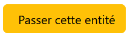
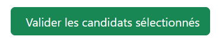
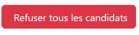
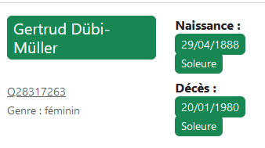
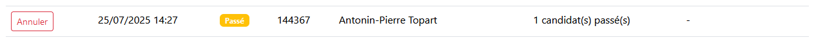
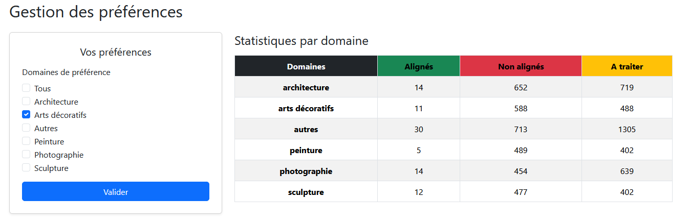
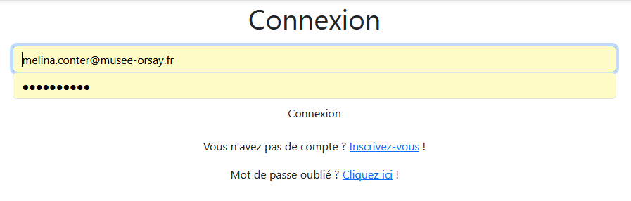
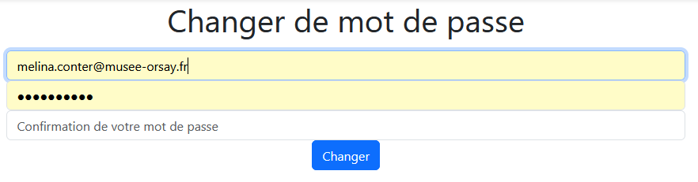

/Dossier_de_l_application/
│
├── run.py # Point d'entrée de l'app (flask run)
├── requirements.txt # Dépendances Python
├── README.md # Description du projet
├── .gitignore # Fichiers/chemins à exclure de Git
│
├── /app/ # Dossier principal de l'application
│ ├── __init__.py
│ ├── app.py # Initialisation de l'app Flask
│ ├── config.py # Configuration (dev, prod, etc.)
│ │
│ ├── /static/ # Fichiers statiques (Bootstrap, CSS, JS...)
│ │ ├── __init__.py
│ │ ├── /css/ # styles CSS
| │ │ └── bootstrap.min.css
| │ │ └── css_historique.css
│ │ ├── /js/ # scripts JS
| │ │ └── bootstrap.bundle.min.js
│ │ └── /img/ # scripts JS
| │ └── LOGO_MUSEE_ORSAY_H+25MM_NORMAL_NOIR.png
│ │
│ ├── /models/ # Modèles de données et de formulaires
│ │ ├── __init__.py
│ │ ├── formulaires.py # FlaskForms (classes pour les formulaires)
│ │ ├── donnees_PRA.py # Modèle de la table extraite du PRA (ORM)
│ │ └── base_principale.py # Modèle de la base app_alignement (ORM)
│ │
│ ├── /routes/ # Routes
│ │ ├── __init__.py
│ │ ├── generales.py # Routes générales (accueil, gestion utilisateurs, historique ...)
│ │ └── validation.py # Routes liées à la validation ou au refus des candidats
│ │
│ └── /templates/ # Templates HTML (Jinja2)
│ ├── __init__.py
│ │
│ ├── /pages/ # Pages complètes
│ │ ├── __init__.py
│ │ ├── base.html # Base de tous les fichiers html de l'application
│ │ ├── accueil.html # Page d'accueil
│ │ ├── validation.html # Interface de validation
│ │ ├── historique.html # Historique de l'utilisateur
│ │ └── preferences.html # Paramètre de préférence de l'utilisateur
│ │
│ └── /partials/ # Composants HTML réutilisables
│ ├── __init__.py
│ ├── head.html
│ ├── navbar.html
│ ├── footer.html
│ ├── script_de_deconnexion_auto.html # script js de déconnexion automatique
│ └── /formulaires/ # Templates de formulaires
│ ├── __init__.py
│ ├── connexion.html
│ ├── inscription.html
│ └── changermdp.html
Fonctionnement :
Retourne :
Provoqué par :

Fonctionnement :
Méthodes :
Args :
Retourne:
Provoqué par :

Fonctionnement :
statut_validation "aligne"Méthodes :
Args :
Retourne :
Provoqué par :

Fonctionnement :
statut_validation "non_aligne"Méthodes :
Args :
Retourne :
Fonctionnement :
Retourne :
Permet d'afficher le taux de ressemblance d'une donnée candidat par apport aux données TMS :

Fonctionnement : renvoie la classe CSS bootstrap correspondant à un scoreflag*
Args :
Retourne :
Fonctionnement : renvoie la catégorisation pour chaque scoreflag*
Args :
Retourne :
Fonctionnement :
Args :
Retourne :
Fonctionnement :
Retourne :
Provoqué par :

Fonctionnement :
TableTMSMéthodes :
Args :
Retourne :
Fait fonctionner :

Fonctionnement :
preferences de Utilisateurs.Par défaut, à la création d'un compte, l'utilisateur a pour préférence "tous".
Méthodes :
Retourne :
Fait fonctionner :
Fonctionnement :
Méthodes :
Args :
Fait fonctionner :

Fonctionnement :
Méthodes :
Retourne :
Fonctionnement : déconnecte l'utilisateur s'il est connecté.
Retourne :
Fonctionnement : déconnecte l'utilisateur actuel de manière silencieuse au bout d'un certain temps d'inactivité (voir variables PERMANENT_SESSION_LIFETIME_MINUTES et SESSION_PERMANENT)
Returns :
Fait fonctionner :

Fonctionnement : permet de changer de mot de passe que l'utilisateur soit connecté ou non (en cas d'oubli par exemple)
Méthodes :
Retourne :
Fonctionnement : affiche la page d'accueil de l'application
Retourne :
Les variables globales de l'application sont stockées dans le fichier .env.
| Nom de la variable | description | type |
|---|---|---|
| SQLALCHEMY_DATABASE_URI | Chemin vers le schema app_alignement (base SQL de l'application) sur le serveur
Postgre du serveur LAB |
str |
| SQLALCHEMY_BINDS_DONNEES_TMS | Chemin vers la table tms-constituent_constituent-description, schema main
(données TMS extraites du serveur PRA) sur le serveur Pstgre du serveur LAB |
str |
| DEBUG | Activer et désactiver le Debug Mode de Flask | bool |
| SECRET_KEY | Clé secrète d'encryptage et de décrytpage des mots de passe | str |
| WTF_CSRF_ENABLE | Activation ou désactivation dui CSRF pour les FlaskForm | bool |
| ACTIONS_PER_PAGE | nombre d'actions par pages dans la page /historique | int |
| TIMER_INACTIVITE_MINUTES | Nombre de minutes avant le déverouillage d'une entité TMS et la redirection automatique vers l'acceuil | int |
| PERMANENT_SESSION_LIFETIME_MINUTES | Nombre de minutes avant la déconnexion automatique et silencieuse | int |
| SESSION_PERMANENT | Activer ou désactiver la déconnexion automatique silencieuse | bool |
L'application est déployée sur le serveur LAB, via un serveur Apache à l'URL https://mo-ux-sdpn:3001. Voir le script de déploiement[] qui permet de mettre à jour l'application depuis la branche principale du dépôt Github.
Note : le dépôt Github est en privé pour des raisons de sécurité (en particulier les variables du .env qui contient des identifiants pour le serveur Postgre du serveur LAB). Tout compte qui n'aura pas été ajouté en tant que collaborateur ne pourra pas y avoir accès.
Permettrait l'utilisation directe du score général de l'API et du score par propriété afin de générer les flags et décider de l'ordre d'affichage des candidats.
Note : le calcul des flags devrait alors se faire à la volée. Le choix de priorisation pour les entités TMS à l'affichage devra être revu car calculé en fonction des flags déjà présents dans la base principale.
Permettrait d'augmenter la cadence de validation, surtout pour les utilisateurs réguliers.
Note : il faudrait alors rajouter un bouton actionnant la route
/validation/valider/<int:tms_id>pour chaque candidat, en-dessous ou à côté de la case à cocher pour choisir un candidat.
Il a été décidé de garder, dans la base principale de l'application, les rangs Wikidata des dates et lieux des candidats. Nous n'avons pour l'instant pas utilisé ces rangs dans le processus de validation pour les raisons suivantes :
Les rangs sont généralement présents lorsque plusieurs valeurs pour une même propriété Wikidata existent (ex : plusieurs dates de morts, plusieurs lieux de naissance etc.). Dans ces cas-là, il est donc assez courant qu'une date de rang deprecated ne soit pas certes plus la date considérée comme valide scientifiquement aujourd'hui. Cependant, il est tout à fait possible que la dtae en question ait été utilisée sur une longue période avant d'être réfutée ce qui a pour conséquence sa présence en tant qu'information dans bon nombre de bases de données ou de sources d'autorité, même aujourd'hui. Cela peut-être le cas des dates et lieux pour des entités TMS d'Orsay. Il est donc important de conserver, dans le processus d'alignement et dans l'application à l'affichage, ces dates et lieux même lorsque leur rang est deprecated afin de pouvoir comparer le plus justement possible les données, même si elles ne sont plus à jour.
Utilisation possible :
deprecated ou prefered. Cela permettrait de savoir si une donnée mérite d'être mis à jour ou non sur TMS par la suite par exemple.Note : il faudra alors trouver une manière d'afficher le rang qui ne rende pas l'interface utilisateur confuse (ex : pas par la couleur car pourrait rendre l'affichage des flags moins clairs.)
Bien que cela changerait quelque peu l'utilité première de l'application, il serait envisageable d'ajouter une menu déroulant ou un autre moyen de signaler une anomalie, un manque de données ou tout autre problème concernant l'entité TMS en cours d'alignement. En effet, l'interface étant conçue pour visionner chaque entité une à une par le personnel scientifique de l'institution, le porcessus de validation pourrait être l'occasion de signaler de façon détaillée les anomalies éventuelles dans TMS.
Note : Cela donnerait lieu à plusieurrs modifications
- Modification de la base de l'application pour stocker les signalements (probablement création d'une table dédiée, reliée par les clés étrangères id_tms et id_utilisateur)
- Modification de la page de l'interface de validation afin d'y ajouter une manière de signaler l'entité TMS sans perturber la lisibilité de la page.
- Création d'un requête SQL / d'une procédure pour faire remonter les signalements aux gestionnaires de la base de donnée
Permettrait d'outre-passer le fait que l'utilisateur ait passé une entité sans avoir à annuler l'action manuellement depuis l'historique. Permettrait également de travailler sur une entité donnée. Cette fonctionnalité pourrait être d'autnat plus pratique lorsque qu'un import de masse aura été réalisé à l'échelle de toutes les entités personnes et institutions de la base TMS d'Orsay. Il faudra alors modifier la route /validation come ceci :
/validation/<int:tms_id>statut_validation, effacement des actions liées dans l'historique à l'entité tms. Sinon procéder normalement avec get_tms_idstatut_validation= "aligne" qui indique avec quel.s candidat.s l'alignement avait été validé. Permettrait la recherche d'un entité TMS via son displayname via une recherche plein texte.
Renverrait une liste des résultats possibles avec un bouton par entité possible qui afficherait l'entité dans l'interface de validation selon le même principe que /validation/<int:tms_id> cité dans la proposition précédente.
Références pour chaque valeur de chaque propriété de chaque candidat :
Cela présenterait un défi de lisibilité dans l'interface de validation mais il serait envisageable d'afficher la source de certaines données importantes afin de que la personnel scientifique puisse évaluer leur fiabilité sans passer par la page Wikidata du candidat. Cela impliquerait probablement une sélection des ources à afficher en amont car il arrive régulièrement que le nombre de références pour une valeur soit important.
IDs Externes pour chaque candidat :
Cette solution présente moins de diffculté en terme de lisibilité pour l'interface de validation. Tout comme l'affichage des références, il faudra tout de même réalser une sélection des types d'ids souhaités à l'affichage afin de ne pas trop encombrer l'interface. Il serait préféreable de les afficher sous forme de lien avec le nom de la source.
Le nombre d'ids externes d'un candidat pourrait être utilisé comme critère pour faire remonter un candidat dans l'ordre d'affiche lorqu'il y en a plusieurs avec un score d'API / des score_flag similaires. Cette donnée est déjà stockée dans la base principale dans la colonne nb_id_externes.
Consisterait en la non exclusion dans get_tms_id des entités ayant un statut_validation = match_communaute (actuellement exclues).